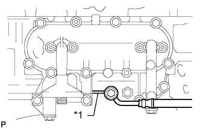

МАСЛЯНЫЙ РАДИАТОР ДВИГАТЕЛЯ > УСТАНОВКА |
| 1. INSTALL OIL COOLER ASSEMBLY |
Install 2 new gaskets and the oil cooler to the filter bracket with the 4 nuts.
| 2. INSTALL OIL FILTER BRACKET SUB-ASSEMBLY |
 |
Install a new gasket and the oil filter bracket with the 10 bolts and 2 nuts.
| *1 | Nut |
| 3. INSTALL OIL FILTER SUB-ASSEMBLY |
Check and clean the oil filter installation surface.
Apply clean engine oil to the gasket of a new oil filter.
Install the oil filter and tighten it by hand until the gasket contacts the installation surface.
Using SST, tighten the oil filter. Choose from the following to further tighten the oil filter.
 |
Using a torque wrench, tighten the oil filter.
Tighten the oil filter a 3/4 turn by hand or with a common wrench.
 | 3/4 turn |
| 4. CONNECT VACUUM PUMP OIL INLET HOSE |
|  |
Connect the vacuum pump oil inlet hose with a new gasket and the union bolt.
| *1 | Stopper-bar |
| 5. INSTALL EXHAUST MANIFOLD |
Install the exhaust manifold (See page Нажмите здесь).
| 6. INSTALL GENERATOR ASSEMBLY |
Install the generator (See page Нажмите здесь).
| 7. ADD ENGINE OIL |
Add fresh engine oil.
| Oil Grade | Oil Viscosity (SAE) |
| API CF-4 or CF | 10W-30 |
| Item | Specified Condition |
| Drain and refill without oil filter change | 6.0 liters (6.3 US qts, 5.3 Imp. qts) |
| Drain and refill with oil filter change | 6.9 liters (7.3 US qts, 6.1 Imp. qts) |
| Dry fill | 7.6 liters (8.0 US qts, 6.7 Imp. qts) |
Install the oil filler cap.
| 8. ADD ENGINE COOLANT |
Затяните пробку сливного крана радиатора вручную.
Затяните пробку сливного крана блока цилиндров.
Медленно заполните систему охлаждающей жидкостью двигателя.
Медленно залейте охлаждающую жидкость в расширительный бачок радиатора до отметки "FULL".
Установите пробку расширительного бачка.
Несколько раз сожмите рукой патрубки радиатора № 1 и № 2, а затем проверьте уровень охлаждающей жидкости. Если уровень охлаждающей жидкости недостаточен, добавьте жидкость.
Установите на место пробку радиатора.
Запустите двигатель и прогрейте его до открывания термостата.
Поддерживайте частоту вращения коленчатого вала двигателя 2000–2500 об/мин.
Несколько раз сожмите патрубки радиатора № 1 и № 2 рукой, чтобы удалить воздух.
Остановите двигатель и подождите, пока охлаждающая жидкость остынет до температуры окружающего воздуха.
Убедитесь, что уровень охлаждающей жидкости находится между отметками "LOW" и "FULL".
Если уровень охлаждающей жидкости ниже линии "Low", повторите все вышеперечисленные действия.
Если уровень охлаждающей жидкости выше уровня "FULL", слейте охлаждающую жидкость до уровня между отметками "FULL" и "LOW".
| 9. INSPECT FOR ENGINE OIL LEAK |
Start the engine. Make sure that there are no oil leaks from the areas that were worked on.
| 10. INSPECT FOR ENGINE COOLANT LEAK |
Fill the radiator with coolant and attach a radiator cap tester to the radiator.
Warm up the engine.
Using a radiator cap tester, increase the pressure inside the radiator to 123 kPa (1.3 kgf/cm2, 18 psi), and check that the pressure does not drop.
If the pressure drops, check the hoses, radiator or water pump for leaks. If no external leaks are found, check the heater core, cylinder block, and cylinder head.
| 11. INSPECT FOR EXHAUST GAS LEAK |